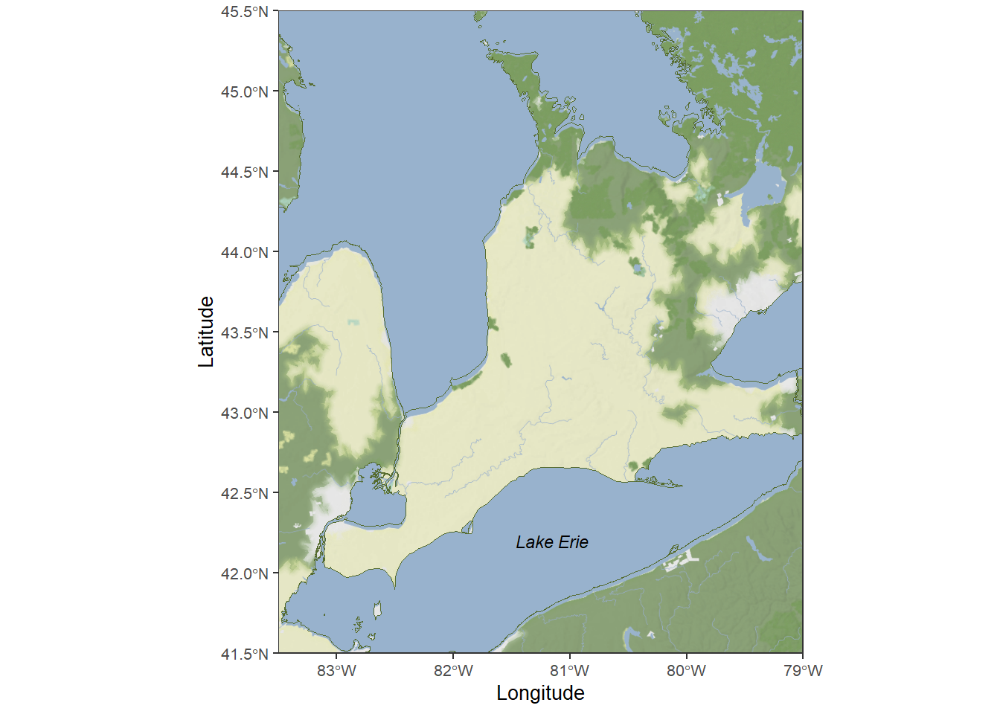

Chapter 4 Maps
This chapter shows how to create a basic map of a study area in the Laurentian Great Lakes region. The map will also include the Great Lakes shoreline from a shapefile I had previously acquired (and now hard to find).
Load libraries
The first step is to get a stadiamap API key (see https://docs.stadiamaps.com/authentication/). My recommendation is to save this key in an R script call stadiakey.R with the following code:
Then, source your script to register your API key in your work session. Once this is done you can acquire and save a base map.
source("PATHNAME/stadiakey.R") # runs the script
# get a map
long_point <- get_stadiamap(bbox=c(left=-83.5,
right=-79,
bottom=41.5,
top=45.5),
maptype = "stamen_terrain_background",
zoom = 8,
color = "color")
ggmap(long_point) # view before saving
save(long_point,file="./data/long_point.rda")Now you’re ready to gather the features.
load("./data/long_point.rda") # load previously saved base layer
# get the Great Lakes shoreline layer
greatLakes <- read_sf(dsn="./data/",
layer="gl_mainlakes_wgs84_rp")
# transform into correct crs (coordinte reference system)
greatLakes_4326 <- st_transform(greatLakes, 4326) Make the map. This is pretty basic and there is much more you can do!
map <- ggmap(long_point)+
geom_sf(data = greatLakes_4326,
mapping = aes(geometry = geometry),
color = "darkolivegreen",
fill = "#98B2CD",
inherit.aes = FALSE)+
ylab("Latitude")+
scale_x_continuous(name="Longitude",
limits=c(-83.5,-79),
expand=c(0,0))+
coord_sf(xlim = c(-83.5, -79),
ylim = c(41.5, 45.5), expand = TRUE) +
theme_bw()+
theme(legend.position = "none")+
theme(axis.text=element_text(size=8),
text = element_text(size =8),
axis.title=element_text(size=10),
strip.text = element_text(size = 12))+
annotate("text", label = "Lake Erie", fontface="italic",
x = -81.15, y = 42.2, size = 3)
map